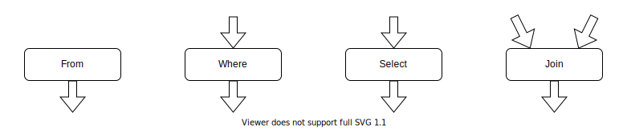

Usage Guide
This guide will teach you how to assemble SQL queries using FunSQL.
Test Database
To demonstrate database queries, we need a test database. The database we use here is a tiny 10 person sample of simulated patient data extracted from a much larger CMS DE-SynPuf dataset. For a database engine, we picked SQLite. Using SQLite in a guide is convenient because it does not require a database server to run and allows us to distribute the whole database as a single file. FunSQL supports SQLite and many other database engines. The techniques discussed here are not specific to SQLite and once you learn them, you will be able to apply them to any SQL database.
If you wish to follow along with the guide and run the examples, download the database file:
const URL = "https://github.com/MechanicalRabbit/ohdsi-synpuf-demo/releases/download/20210412/synpuf-10p.sqlite"
const DB = download(URL)All examples in this guide are tested on each update using the NarrativeTest package. To avoid downloading the database file all the time, we registered the download URL as an artifact and use Pkg.Artifacts API to fetch it:
using Pkg.Artifacts, LazyArtifacts
const DB = joinpath(artifact"synpuf-10p", "synpuf-10p.sqlite")
#-> ⋮Database Connection
To interact with a SQLite database from Julia code, we need to install the SQLite package:
using Pkg
Pkg.add("SQLite")Once the package is installed, we can use it to connect to the database:
using SQLite
const conn = SQLite.DB(DB)Later we will use the conn object to execute database queries.
Database Schema
The data in the test database is stored in the format of the OMOP Common Data Model, an open source database schema for observational healthcare data. In this guide, we will only use a small fragment of the Common Data Model.

Before we can start assembling queries with FunSQL, we need to make FunSQL aware of the database schema. For each table in the database, we need to create a corresponding SQLTable object, which encapsulates the name of the table together with the names of the columns.
using FunSQL: SQLTableThe patient data, including basic demographic information, is stored in the table person:
const person =
SQLTable(:person,
columns = [:person_id, :year_of_birth, :location_id])Patient addresses are stored in a separate table location, linked to person by the key column location_id:
const location =
SQLTable(:location,
columns = [:location_id, :city, :state])The bulk of patient data consists of clinical events: visits to healthcare providers, recorded observations, diagnosed conditions, prescribed medications, etc. In this guide we only use two types of events, visits and conditions:
const visit_occurrence =
SQLTable(:visit_occurrence,
columns = [:visit_occurrence_id, :person_id,
:visit_concept_id,
:visit_start_date, :visit_end_date])
const condition_occurrence =
SQLTable(:condition_occurrence,
columns = [:condition_occurrence_id, :person_id,
:condition_concept_id,
:condition_start_date, :condition_end_date])The specific type of the event (e.g., Inpatient visit or Essential hypertension condition) is indicated using a concept id column, which refers to the concept table:
const concept =
SQLTable(:concept,
columns = [:concept_id, :concept_name])Different concepts may be related to each other. For instance, Essential hypertension is a Hypertensive disorder, which itself is a Disorder of cardiovascular system. Concept relationships are recorded in the corresponding table:
const concept_relationship =
SQLTable(:concept_relationship,
columns = [:concept_id_1, :concept_id_2, :relationship_id])Why FunSQL?
Let us start with clarifying the purpose of FunSQL. Consider a problem:
Find all patients born between 1930 and 1940 and living in Illinois, and for each patient show their current age (by the end of 2020).
The answer can be obtained with the following SQL query:
SELECT p.person_id, 2020 - p.year_of_birth AS age
FROM person p
JOIN location l ON (p.location_id = l.location_id)
WHERE (p.year_of_birth BETWEEN 1930 AND 1940) AND (l.state = 'IL')The simplest way to incorporate this query into Julia code is to embed it as a string literal:
sql = """
SELECT p.person_id, 2020 - p.year_of_birth AS age
FROM person p
JOIN location l ON (p.location_id = l.location_id)
WHERE (p.year_of_birth BETWEEN 1930 AND 1940) AND (l.state = 'IL')
"""Using the appropriate database engine API and the connection object created earlier, we can execute this query and get back the answer:
res = DBInterface.execute(conn, sql)
#-> SQLite.Query( … )As an aside, it is convenient to use the DataFrame interface to show the output of a query in tabular form:
using DataFrames
DataFrame(res)
#=>
1×2 DataFrame
Row │ person_id age
│ Int64 Int64
─────┼──────────────────
1 │ 72120 83
=#FunSQL introduces an extra step to this workflow. Instead of embedding the SQL query directly into Julia code, we construct a query object:
using FunSQL: As, From, Fun, Get, Join, Select, Where
q = From(person) |>
Where(Fun.between(Get.year_of_birth, 1930, 1940)) |>
Join(From(location) |> Where(Get.state .== "IL") |> As(:location),
on = Get.location_id .== Get.location.location_id) |>
Select(Get.person_id, :age => 2020 .- Get.year_of_birth)The value of q is a composite object of type SQLNode. "Composite" means that q is assembled from components (also of type SQLNode), which themselves are either atomic or assembled from smaller components. Different kinds of components are created by SQLNode constructors such as From, Where, Fun, Get, etc.
The actual SQL query is generated by rendering the query object:
using FunSQL: render
sql = render(q, dialect = :sqlite)
print(sql)
#=>
SELECT "person_2"."person_id", (2020 - "person_2"."year_of_birth") AS "age"
FROM (
SELECT "person_1"."location_id", "person_1"."person_id", "person_1"."year_of_birth"
FROM "person" AS "person_1"
WHERE ("person_1"."year_of_birth" BETWEEN 1930 AND 1940)
) AS "person_2"
JOIN (
SELECT "location_1"."location_id"
FROM "location" AS "location_1"
WHERE ("location_1"."state" = 'IL')
) AS "location_2" ON ("person_2"."location_id" = "location_2"."location_id")
=#Notice that the render function takes a parameter called dialect. Although the SQL language is standardized, different implementations of SQL tend to deviate from the standard far enough to make them mutually incompatible. For this reason, FunSQL lets us select the target SQL dialect.
At this point, the job of FunSQL is done and, just as before, we can execute the query and display the result:
res = DBInterface.execute(conn, sql)
DataFrame(res)
#=>
1×2 DataFrame
Row │ person_id age
│ Int64 Int64
─────┼──────────────────
1 │ 72120 83
=#Why, instead of embedding a complete SQL query, we prefer to generate it through a query object? To justify this extra step, consider that in a real Julia program, any query is likely going to be parameterized:
Find all patients born between $start_year and $end_year and living in $states, and for each patient show the $output_columns.
If this is the case, the SQL query cannot be prepared in advance and must be assembled on the fly. While it is possible to assemble a SQL query from string fragments, it is tedious, error-prone and definitely not fun. FunSQL provides a more robust and effective approach: build the query as a composite data structure.
Here is how a parameterized query may be constructed with FunSQL:
function FindPatients(; start_year = nothing,
end_year = nothing,
states = String[])
q = From(person) |>
Where(BirthRange(start_year, end_year))
if !isempty(states)
q = q |>
Join(:location => From(location) |>
Where(Fun.in(Get.state, states...)),
on = Get.location_id .== Get.location.location_id)
end
q
end
function BirthRange(start_year, end_year)
p = true
if start_year !== nothing
p = Fun.and(p, Get.year_of_birth .>= start_year)
end
if end_year !== nothing
p = Fun.and(p, Get.year_of_birth .<= end_year)
end
p
endThe function FindPatients effectively becomes a new SQLNode constructor, which can be used directly or as a component of a larger query.
Show all patients.
q = FindPatients()
print(render(q, dialect = :sqlite))
#=>
SELECT "person_1"."person_id", "person_1"."year_of_birth", "person_1"."location_id"
FROM "person" AS "person_1"
=#Show all patients born in or after 1930.
q = FindPatients(start_year = 1930) |>
Select(Get.person_id)
print(render(q, dialect = :sqlite))
#=>
SELECT "person_1"."person_id"
FROM "person" AS "person_1"
WHERE ("person_1"."year_of_birth" >= 1930)
=#Find all patients born between 1930 and 1940 and living in Illinois, and for each patient show their current age.
q = FindPatients(start_year = 1930, end_year = 1940, states = ["IL"]) |>
Select(Get.person_id, :age => 2020 .- Get.year_of_birth)
print(render(q, dialect = :sqlite))
#=>
SELECT "person_2"."person_id", (2020 - "person_2"."year_of_birth") AS "age"
FROM (
SELECT "person_1"."location_id", "person_1"."person_id", "person_1"."year_of_birth"
FROM "person" AS "person_1"
WHERE (("person_1"."year_of_birth" >= 1930) AND ("person_1"."year_of_birth" <= 1940))
) AS "person_2"
JOIN (
SELECT "location_1"."location_id"
FROM "location" AS "location_1"
WHERE ("location_1"."state" IN ('IL'))
) AS "location_2" ON ("person_2"."location_id" = "location_2"."location_id")
=#Tabular Operations
Recall the query from the previous section:
Find all patients born between 1930 and 1940 and living in Illinois, and for each patient show their current age.
From(person) |>
Where(Fun.between(Get.year_of_birth, 1930, 1940)) |>
Join(From(location) |> Where(Get.state .== "IL") |> As(:location),
on = Get.location_id .== Get.location.location_id) |>
Select(Get.person_id, :age => 2020 .- Get.year_of_birth)At the outer level, this query is constructed from tabular operations From, Where, Join, and Select arranged in a pipeline by the pipe (|>) operator. In SQL, a tabular operation takes a certain number of input datasets and produces an output dataset. It is helpful to visualize a tabular operation as a node with a certain number of input arrows and one output arrow.

Then the whole query can be visualized as a pipeline diagram. Each arrow in this diagram represents a dataset, and each node represents an elementary data processing operation.
The following tabular operations are available in FunSQL.
| Constructor | Function |
|---|---|
Append | concatenate datasets |
As | wrap all columns in a nested record |
Bind | correlate a subquery in a join expression |
Define | add an output column |
From | produce the content of a database table |
Group | partition the dataset into disjoint groups |
Join | correlate two datasets |
Limit | truncate the dataset |
Order | sort the dataset |
Partition | add a window to the dataset |
Select | specify output columns |
Where | filter the dataset by the given condition |
From and Select
The From node outputs the content of a database table. The constructor takes one argument, a SQLTable object (see the section Database Schema). In a query, a bare SQLTable object is automatically converted to a From node, so one could write more compactly:
For each patient, show their current age.
person |>
Select(Get.person_id, :age => 2020 .- Get.year_of_birth)It is possible for a query not to have a From node:
Show the current date and time.
q = Select(Fun.current_timestamp())
sql = render(q)
print(sql)
#-> SELECT CURRENT_TIMESTAMP AS "current_timestamp"In this query, the Select node is not connected to any source of data. In such a case, it is supplied with a unit dataset containing one row and no columns. Hence this query will generate one row of output.
In general, the Select node is used to specify the output columns. The name of the column is either derived from the expression or set explicitly with As (or its shorthand, the arrow (=>) operator).
As opposed to SQL, FunSQL does not demand that all queries have an explicit Select. The following query will produce all columns of the table:
Show all patients.
q = From(person)
sql = render(q)
print(sql)
#=>
SELECT "person_1"."person_id", "person_1"."year_of_birth", "person_1"."location_id"
FROM "person" AS "person_1"
=#Join
The Join node correlates the rows of two input datasets. Predominantly, Join is used for looking up table records by key. In the following example, Join associates each person record with their location using the key column location_id that uniquely identifies a location record:
Show all patients together with their state of residence.
person |>
Join(:location => location,
Get.location_id .== Get.location.location_id,
left = true) |>
Select(Get.person_id, Get.location.state)The modifier left = true tells Join that it must output all person records including those without the corresponding location. Since this is a very common requirement, FunSQL provides an alias:
using FunSQL: LeftJoin
person |>
LeftJoin(:location => location,
Get.location_id .== Get.location.location_id) |>
Select(Get.person_id, Get.location.state)Since Join needs two input datasets, it must be attached to two input pipelines. The first pipeline is attached using the |> operator and the second one is provided as an argument to the Join constructor. Alternatively, both input pipelines can be specified as keyword arguments:
Join(over = person,
joinee = :location => location,
on = Get.location_id .== Get.location.location_id,
left = true) |>
Select(Get.person_id, Get.location.state)The output of Join combines columns of both input datasets, which will cause ambiguity if both datasets have a column with the same name. Such is the case in the previous example since both tables, person and location, have a column called location_id. To disambiguate them, we can place all columns of one of the datasets into a nested record. This is the action of the arrow (=>) operator or its full form, the As node:
using FunSQL: As
From(person) |>
LeftJoin(From(location) |> As(:location),
on = Get.location_id .== Get.location.location_id) |>
Select(Get.person_id, Get.location.state)Alternatively, we could use bound column references, which are described in a later section.
Scalar Operations
Many tabular operations including Join, Select and Where are parameterized with scalar operations. A scalar operation acts on an individual row of a dataset and produces a scalar value. Scalar operations are assembled from literal values, column references, and applications of SQL functions and operators. Below is a list of scalar operations available in FunSQL.
| Constructor | Function |
|---|---|
Agg | apply an aggregate function |
As | assign a column alias |
Bind | correlate an inner subquery |
Fun | apply a scalar function or a scalar operator |
Get | produce the value of a column |
Lit | produce a constant value |
Sort | indicate the sort order |
Var | produce the value of a query parameter |
Lit
The Lit node creates a literal value, although we could usually omit the constructor:
using FunSQL: Lit
Select(Lit(42))
Select(42)The SQL value NULL is represented by the Julia constant missing:
q = Select(missing)
sql = render(q, dialect = :sqlite)
print(sql)
#-> SELECT NULL AS "_"Get
The Get node creates a column reference. The Get constructor admits several equivalent forms:
Get.year_of_birth
Get(:year_of_birth)
Get."year_of_birth"
Get("year_of_birth")Such column references are resolved at the place of use against the input dataset. As we mentioned earlier, sometimes column references cannot be resolved unambiguously. To alleviate this problem, we can bind the column reference to the node that produces it:
Show all patients with their state of residence.
qₚ = From(person)
qₗ = From(location)
q = qₚ |>
LeftJoin(qₗ, on = qₚ.location_id .== qₗ.location_id) |>
Select(qₚ.person_id, qₗ.state)The notation qₚ.location_id and qₗ.location_id is a syntax sugar for
Get(:location_id, over = qₚ)
Get(:location_id, over = qₗ)Fun
SQL functions and operators are represented using the Fun node, which also has several equivalent forms:
Fun.between(Get.year_of_birth, 1930, 1940)
Fun(:between, Get.year_of_birth, 1930, 1940)
Fun."between"(Get.year_of_birth, 1930, 1940)
Fun("between", Get.year_of_birth, 1930, 1940)Certain SQL operators, notably comparison operators, can be represented using Julia broadcasting notation:
Fun.">="(Get.year_of_birth, 1930)
Get.year_of_birth .>= 1930We should note that FunSQL does not verify if a SQL function or an operator is used correctly or even whether it exists or not. In such a case, FunSQL will generate a SQL query that fails to execute:
q = From(person) |>
Select(Fun.frobnicate(Get.year_of_birth))
sql = render(q, dialect = :sqlite)
print(sql)
#=>
SELECT FROBNICATE("person_1"."year_of_birth") AS "frobnicate"
FROM "person" AS "person_1"
=#
DBInterface.execute(conn, sql)
#-> ERROR: SQLite.SQLiteException("no such function: FROBNICATE")On the other hand, FunSQL will correctly serialize many SQL functions and operators that have irregular syntax including AND, OR, NOT, IN, EXISTS, CASE, and others:
Show the demographic cohort of each patient.
q = From(person) |>
Select(Fun.case(Get.year_of_birth .<= 1960, "boomer", "millenial"))
sql = render(q, dialect = :sqlite)
print(sql)
#=>
SELECT (CASE WHEN ("person_1"."year_of_birth" <= 1960) THEN 'boomer' ELSE 'millenial' END) AS "case"
FROM "person" AS "person_1"
=#Group and Aggregate Functions
Group and aggregate functions are used for summarizing data to report totals, averages and so on. We start by applying the Group node to partition the input rows into disjoint groups. We can then use aggregate functions to calculate summary values from the rows of each group. In FunSQL, aggregate functions are created using the Agg node. In the following example, we use the aggregate function Agg.count, which simply counts the number of rows in each group.
Show the number of patients by the year of birth.
using FunSQL: Agg, Group
q = From(person) |>
Group(Get.year_of_birth) |>
Select(Get.year_of_birth, Agg.count())
sql = render(q, dialect = :sqlite)
print(sql)
#=>
SELECT "person_1"."year_of_birth", COUNT(*) AS "count"
FROM "person" AS "person_1"
GROUP BY "person_1"."year_of_birth"
=#
res = DBInterface.execute(conn, sql)
DataFrame(res)
#=>
10×2 DataFrame
Row │ year_of_birth count
│ Int64 Int64
─────┼──────────────────────
1 │ 1911 1
2 │ 1913 1
3 │ 1922 1
⋮
=#To indicate that aggregate functions must be applied to the dataset as a whole, we create a Group node without arguments. This is the case where FunSQL notation deviates from SQL, where we would omit the GROUP BY clause to achieve the same effect.
Show the average year of birth.
q = From(person) |>
Group() |>
Select(Agg.avg(Get.year_of_birth))
sql = render(q, dialect = :sqlite)
print(sql)
#=>
SELECT AVG("person_1"."year_of_birth") AS "avg"
FROM "person" AS "person_1"
=#
res = DBInterface.execute(conn, sql)
DataFrame(res)
#=>
1×1 DataFrame
Row │ avg
│ Float64
─────┼─────────
1 │ 1935.4
=#In general, the arguments of the Group node form the grouping key so that two rows of the input dataset belongs to the same group when they have the same value of the grouping key. The output of Group contains all distinct values of the grouping key.
Show the US states that are present in the location records.
q = From(location) |>
Group(Get.state)
sql = render(q, dialect = :sqlite)
print(sql)
#=>
SELECT DISTINCT "location_1"."state"
FROM "location" AS "location_1"
=#
res = DBInterface.execute(conn, sql)
DataFrame(res)
#=>
10×1 DataFrame
Row │ state
│ String
─────┼────────
1 │ MI
2 │ WA
3 │ FL
⋮
=#FunSQL has no lexical limitations on the use of aggregate functions. While in SQL aggregate functions can only be used in the SELECT or HAVING clauses, there is no such restriction in FunSQL: they could be used in any context where an ordinary expression is permitted. The only requirement is that for each aggregate function, FunSQL can determine the corresponding Group node. It is convenient to imagine that the output of Group contains the grouped rows, which cannot be observed directly, but whose presence in the output allows us to apply aggregate functions.
In particular, we use a regular Where node where SQL would require a HAVING clause.
Show patients who saw a doctor within the last year.
q = From(visit_occurrence) |>
Group(Get.person_id) |>
Where(Agg.max(Get.visit_end_date) .>= Fun.date("now", "-1 year"))
sql = render(q, dialect = :sqlite)
print(sql)
#=>
SELECT "visit_occurrence_1"."person_id"
FROM "visit_occurrence" AS "visit_occurrence_1"
GROUP BY "visit_occurrence_1"."person_id"
HAVING (MAX("visit_occurrence_1"."visit_end_date") >= DATE('now', '-1 year'))
=#When the output of Group is blocked by an As node, we need to traverse it with Get in order to use an aggregate function.
For each patient, show the date of their latest visit to a doctor.
q = From(person) |>
LeftJoin(:visit_group => From(visit_occurrence) |> Group(Get.person_id),
on = Get.person_id .== Get.visit_group.person_id) |>
Select(Get.person_id,
Get.visit_group |> Agg.max(Get.visit_start_date))
sql = render(q, dialect = :sqlite)
print(sql)
#=>
SELECT "person_1"."person_id", "visit_group_1"."max"
FROM "person" AS "person_1"
LEFT JOIN (
SELECT "visit_occurrence_1"."person_id", MAX("visit_occurrence_1"."visit_start_date") AS "max"
FROM "visit_occurrence" AS "visit_occurrence_1"
GROUP BY "visit_occurrence_1"."person_id"
) AS "visit_group_1" ON ("person_1"."person_id" = "visit_group_1"."person_id")
=#Partition and Window Functions
We can relate each row to other rows in the same dataset using the Partition node and window functions. We start by applying the Partition node to partition the input rows into disjoint groups. The rows in each group are reordered according to the given sort order. Unlike Group, which collapses each row group into a single row, the Partition node preserves the original rows, but allows us to relate each row to adjacent rows in the same partition. In particular, we can apply regular aggregate functions, which calculate the summary value of a subset of rows related to the current row.
In the following example, the rows visit_occurrence are partitioned per patient and ordered by the starting date of the visit. The frame clause specifies the subset of rows relative to the current row (the window frame) to be used by aggregate functions. In this example, the frame contains all rows prior to the current row.
For each visit, show the time passed since the previous visit.
using FunSQL: Partition
q = From(visit_occurrence) |>
Partition(Get.person_id,
order_by = [Get.visit_start_date],
frame = (mode = :rows, start = -Inf, finish = -1)) |>
Select(Get.person_id,
Get.visit_start_date,
Get.visit_end_date,
:gap => Fun.julianday(Get.visit_start_date) .- Fun.julianday(Agg.max(Get.visit_end_date)))
sql = render(q, dialect = :sqlite)
print(sql)
#=>
SELECT "visit_occurrence_1"."person_id", "visit_occurrence_1"."visit_start_date", "visit_occurrence_1"."visit_end_date", (JULIANDAY("visit_occurrence_1"."visit_start_date") - JULIANDAY((MAX("visit_occurrence_1"."visit_end_date") OVER (PARTITION BY "visit_occurrence_1"."person_id" ORDER BY "visit_occurrence_1"."visit_start_date" ROWS BETWEEN UNBOUNDED PRECEDING AND 1 PRECEDING)))) AS "gap"
FROM "visit_occurrence" AS "visit_occurrence_1"
=#
res = DBInterface.execute(conn, sql)
DataFrame(res)
#=>
27×4 DataFrame
Row │ person_id visit_start_date visit_end_date gap
│ Int64 String String Float64?
─────┼────────────────────────────────────────────────────────
1 │ 1780 2008-04-09 2008-04-13 missing
2 │ 1780 2008-04-10 2008-04-10 -3.0
3 │ 1780 2008-11-22 2008-11-22 223.0
4 │ 1780 2009-05-22 2009-05-22 181.0
⋮
=#Query Parameters
A SQL query may include a reference to a query parameter. When we execute such a query, we must supply the actual values for all parameters used in the query. This is a restricted form of dynamic query construction directly supported by SQL syntax.
Show all patients born between $start_year and $end_year.
sql = """
SELECT p.person_id
FROM person p
WHERE p.year_of_birth BETWEEN ? AND ?
"""
res = DBInterface.execute(conn, sql, (1930, 1940))
DataFrame(res)
#=>
3×1 DataFrame
Row │ person_id
│ Int64
─────┼───────────
1 │ 1780
2 │ 30091
3 │ 72120
=#FunSQL can be used to construct a query with parameters. Similar to Get, parameter references are created using the Var node.
using FunSQL: Var
q = From(person) |>
Where(Fun.between(Get.year_of_birth, Var.start_year, Var.end_year)) |>
Select(Get.person_id)
sql = render(q, dialect = :sqlite)
print(sql)
#=>
SELECT "person_1"."person_id"
FROM "person" AS "person_1"
WHERE ("person_1"."year_of_birth" BETWEEN ?1 AND ?2)
=#While we specified parameters by name, in the generated SQL query the same parameters are numbered. If we know the values of the parameters and we wish to execute the query with them, we need to pack the values in the order in which parameters appear in the SQL query:
using FunSQL: pack
params = pack(sql, (start_year = 1930, end_year = 1940))
#-> Any[1930, 1940]
res = DBInterface.execute(conn, sql, params)
DataFrame(res)
#=>
3×1 DataFrame
Row │ person_id
│ Int64
─────┼───────────
1 │ 1780
2 │ 30091
3 │ 72120
=#Correlated Queries
An inner query is a SQL query that is included into the outer query a part of a scalar expression. An inner query must either produce a single value or be used as an argument of a query operator, such as IN or EXISTS, which transforms the query output to a scalar value.
It is easy to assemble an inner query with FunSQL.
Find the oldest patients.
qᵢ = From(person) |>
Group() |>
Select(Agg.min(Get.year_of_birth))
qₒ = From(person) |>
Where(Get.year_of_birth .== qᵢ)
sql = render(qₒ, dialect = :sqlite)
print(sql)
#=>
SELECT "person_1"."person_id", "person_1"."year_of_birth", "person_1"."location_id"
FROM "person" AS "person_1"
WHERE ("person_1"."year_of_birth" = (
SELECT MIN("person_2"."year_of_birth") AS "min"
FROM "person" AS "person_2"
))
=#
res = DBInterface.execute(conn, sql)
DataFrame(res)
#=>
1×3 DataFrame
Row │ person_id year_of_birth location_id
│ Int64 Int64 Int64
─────┼───────────────────────────────────────
1 │ 110862 1911 436
=#Find patients with no visits to a healthcare provider.
qᵢ = From(visit_occurrence) |>
Select(Get.person_id)
qₒ = From(person) |>
Where(Fun."not in"(Get.person_id, qᵢ))
sql = render(qₒ, dialect = :sqlite)
print(sql)
#=>
SELECT "person_1"."person_id", "person_1"."year_of_birth", "person_1"."location_id"
FROM "person" AS "person_1"
WHERE ("person_1"."person_id" NOT IN (
SELECT "visit_occurrence_1"."person_id"
FROM "visit_occurrence" AS "visit_occurrence_1"
))
=#
res = DBInterface.execute(conn, sql)
DataFrame(res)
#=>
0×3 DataFrame
=#An inner query may depend on the data from the outer query. Such inner queries are called correlated. In FunSQL, correlated queries are created using the Bind node. Specifically, in the body of a correlated query we use query parameters to refer to the external data. The Bind node, which wrap the correlated query, binds each parameter to an expression evaluated in the context of the outer query.
Find all visits where at least one condition was diagnosed.
using FunSQL: Bind
CorrelatedCondition(person_id, start_date, end_date) =
From(condition_occurrence) |>
Where(Fun.and(Get.person_id .== Var.person_id,
Fun.between(Get.condition_start_date, Var.start_date, Var.end_date))) |>
Bind(:person_id => person_id,
:start_date => start_date,
:end_date => end_date)
q = From(visit_occurrence) |>
Where(Fun.exists(CorrelatedCondition(Get.person_id, Get.visit_start_date, Get.visit_end_date)))
sql = render(q, dialect = :sqlite)
print(sql)
#=>
SELECT "visit_occurrence_1"."visit_occurrence_id", "visit_occurrence_1"."person_id", "visit_occurrence_1"."visit_concept_id", "visit_occurrence_1"."visit_start_date", "visit_occurrence_1"."visit_end_date"
FROM "visit_occurrence" AS "visit_occurrence_1"
WHERE (EXISTS (
SELECT NULL
FROM "condition_occurrence" AS "condition_occurrence_1"
WHERE (("condition_occurrence_1"."person_id" = "visit_occurrence_1"."person_id") AND ("condition_occurrence_1"."condition_start_date" BETWEEN "visit_occurrence_1"."visit_start_date" AND "visit_occurrence_1"."visit_end_date"))
))
=#